Residential Radon Solutions, LLC
Adaptive control for residential radon mitigation fans
Smart Radon Fan — Installation & User Guide
Follow these steps to bring the Shelly smart plug and RadonBox online, then access your Smart Radon Fan dashboard.
Smart Radon Fan
Component Detail and Installation Instructions
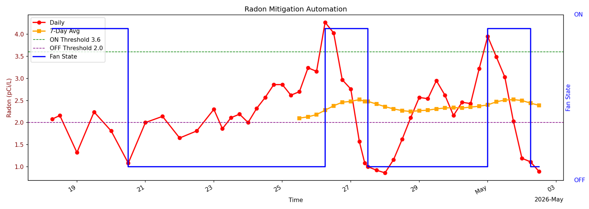
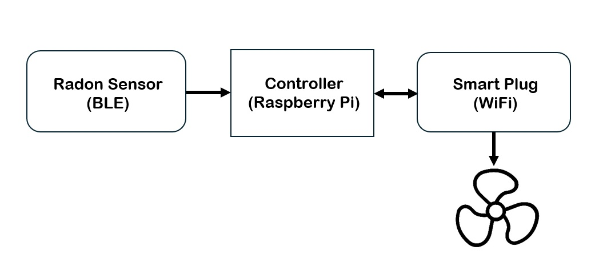
Component Detail
The Smart Radon Fan consists of three components: A Raspberry Pi controller, referred to as the RadonBox; an Airthings Bluetooth Radon Meter; and a Shelly Smart Plug. The Smart Radon Fan software is contained on a 32GB micro-SD card, inserted into the Raspberry Pi.
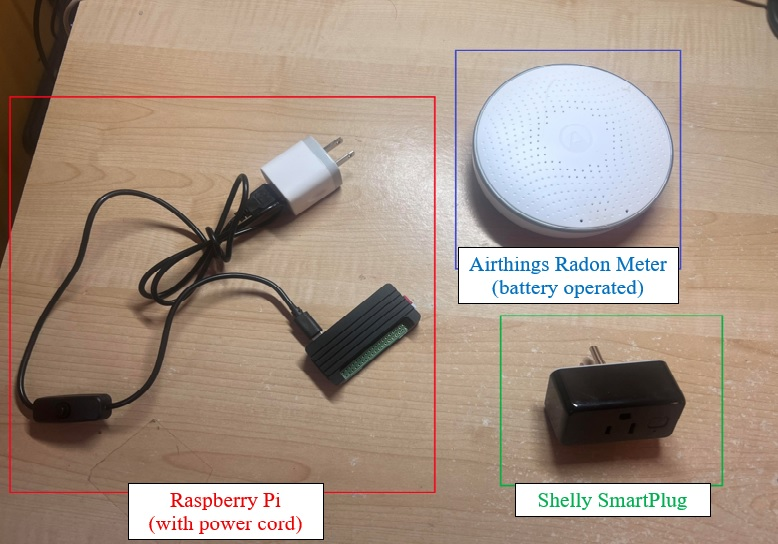
The most inexpensive Raspberry Pi product is purchased as a miniature, single board computer, which is then placed inside a separate enclosure. These parts are shown below:
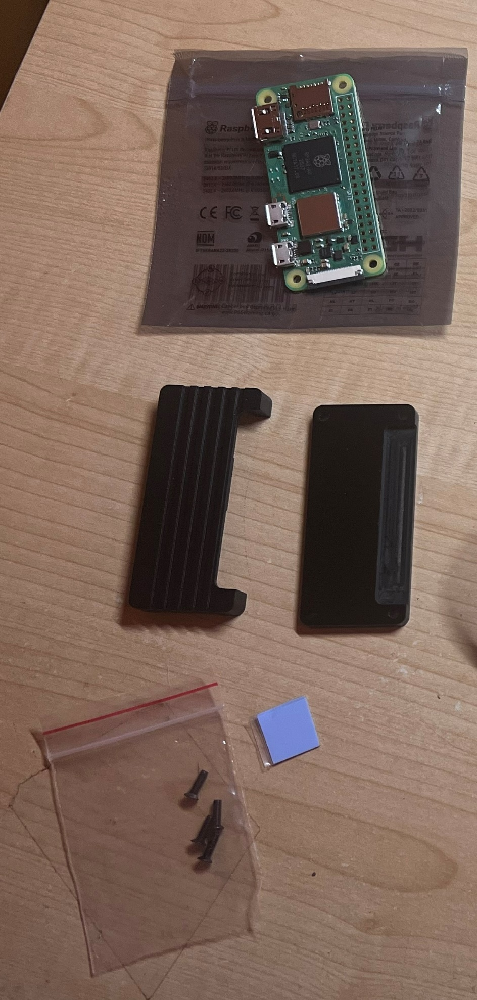
The radon fan power chord is routed from an externally mounted fan into the home and terminated with a three prong plug. The fan plug is plugged into the Shelly SmartPlug:
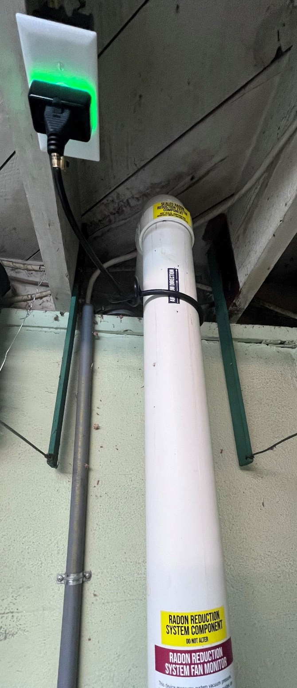
The Raspberry Pi controller (RadonBox) is plugged into a receptacle and the Airthings Radon Meter is mounted near to it.
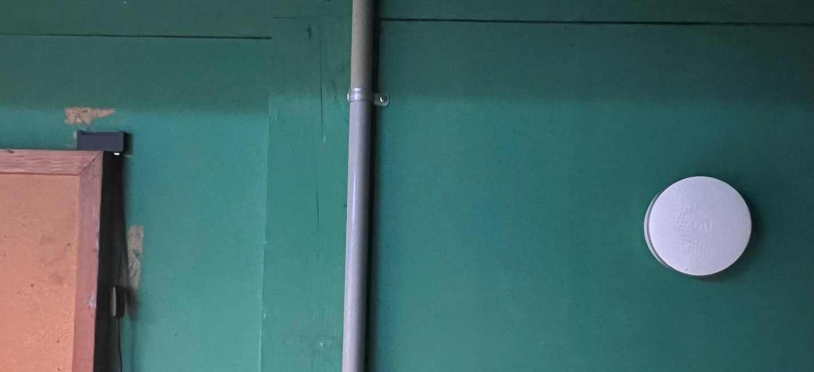
Component Purchase Details
Component purchase list (example)
| Item | Approx. cost (USD) | Where to buy |
|---|---|---|
| Pi Zero 2W | $15 | Open link |
| Pi Case | $10 | Open link |
| USB-AC Adapter | $7 | Open link |
| Airthings 2950 Wave Radon | $82 | Open link |
| Shelly Plug US Gen4 Black | $20 | Open link |
| Total | $134 | — |
| TayMac MM720C Bell 1-Gang Non-Metallic Weatherproof In-Use Deep Cover, Clear | $19 | Open link |
Prices and availability can change. The “Total” row reflects the example parts list in this document.
Smart Radon Fan Installation
Step 1. The Shelly Smart Plug is brought onto the WiFi network.
Once plugged in, the Shelly Smart Plug will appear as an access point network (AP) at the user’s smartphone WiFi Settings page, and the smartphone can join it.
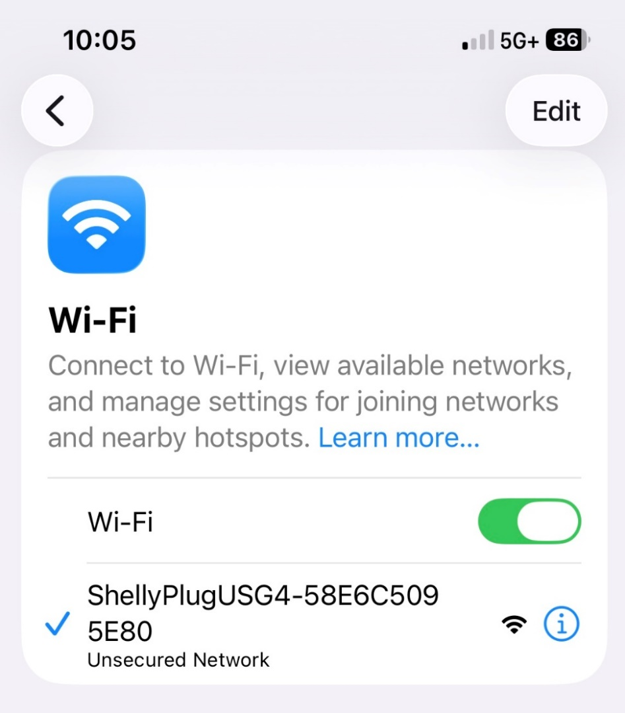
Once the smartphone joins the Shelly AP network, the Shelly Smart Plug can be accessed from a smartphone browser at address 192.168.33.1, in order to give it home WiFi network credentials.
Having entered 192.168.33.1 into a smartphone browser address, a “Connecting to Shelly” screen will appear on the smartphone, and then the Shelly application screen will appear:
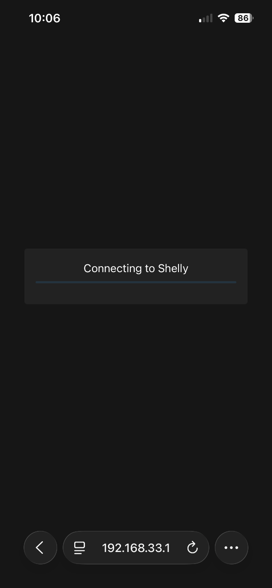
Note that when a smartphone joins an AP network, the smartphone may ask the user if it should remain on that network. The response should be “Keep Trying WiFi”:
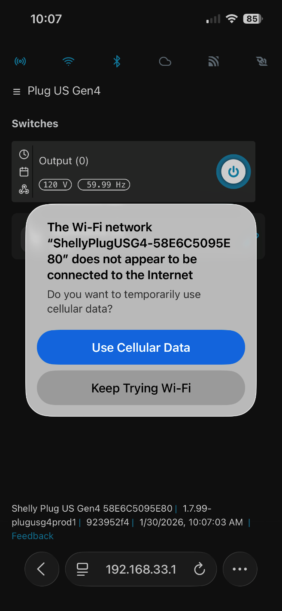
Continue with the Shelly app, adding the credentials of the user’s WiFi network. Here, the residential network name is nnamtug2 and the password has been entered. Use the Save settings button to complete the Shelly on-boarding to the user’s WiFi network. And at this point, there is nothing more to do with the Shelly Smart Plug. Just return the smartphone to the users’s home network.
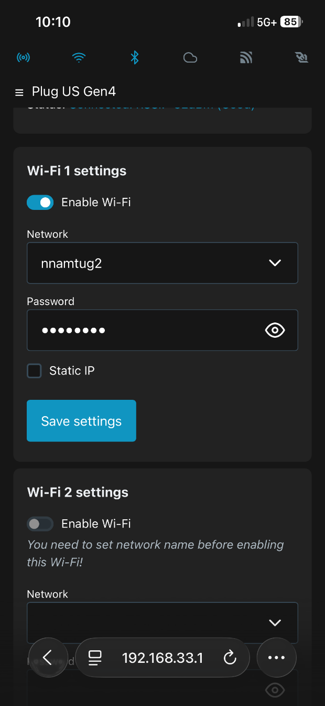
Step 2. Bring the Raspberry Pi controller, often referred to as RadonBox, onto the home WiFi network. This is very similar to what was just done with the Shelly Smart Plug.
Once the Pi is plugged in, it will begin to broadcast an AP network that a smartphone can join. It will usually take a couple of minutes for the Pi RadonBox to appear as an AP network that can be joined.
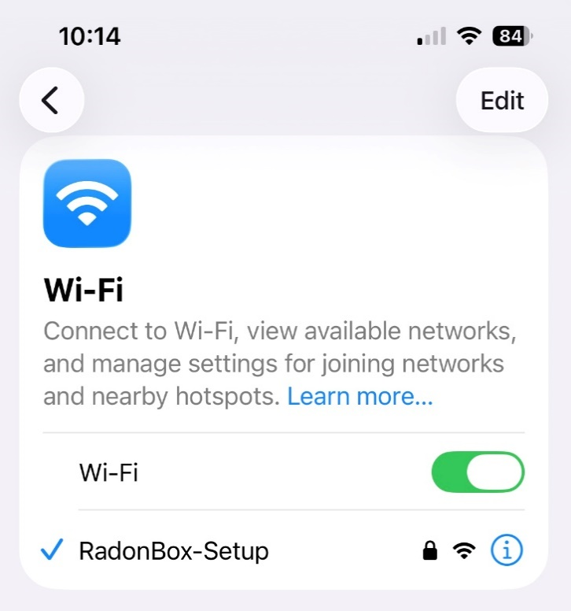
Select the RadonBox-Setup network, and once joined, enter the address 192.168.4.1:8080 into a smartphone browser address field. The following RadonBox Setup page will appear:
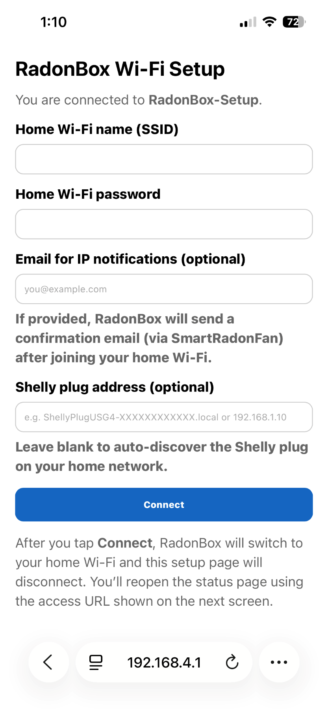
As with the Shelly, the home WiFi network name and password are entered and, in addition, an email address where, if specified, the user can receive the local network address of the RadonBox, once it is on the home network.
The Connect button on the page above is used, and immediately after, the following screen appears:
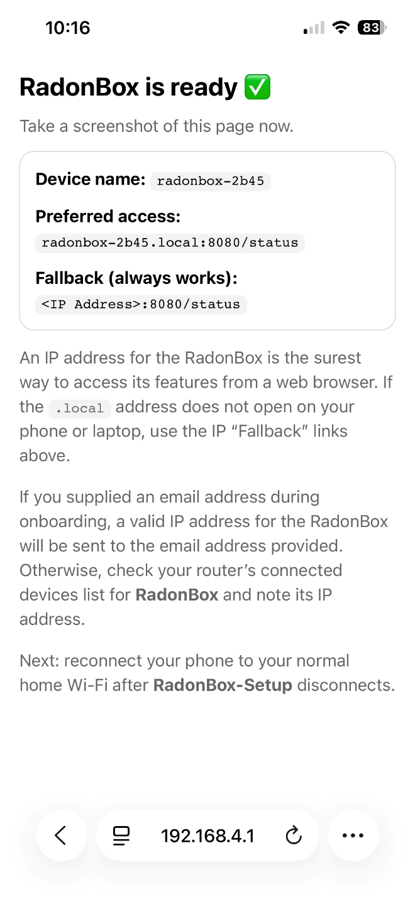
In many home networks, the radonbox-XXXX.local:8080/status address will take the user to the RadonBox where its status, radon charts, and other configuration options will become available.
A more reliable and simpler method is to wait a few minutes for the system to discover the Shelly and Airthings devices, and then send an email with a link to the RadonBox on the user’s home network.
The email exchange begins with a confirmation email to keep the system secure:
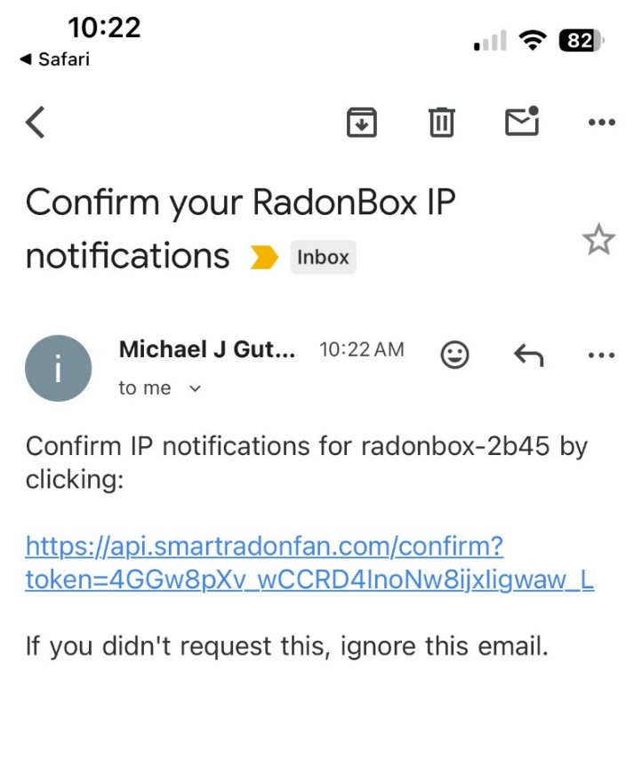
And the a second email will follow, almost immediately, with a RadonBox link that can be used to access the Smart Radon Fan features:
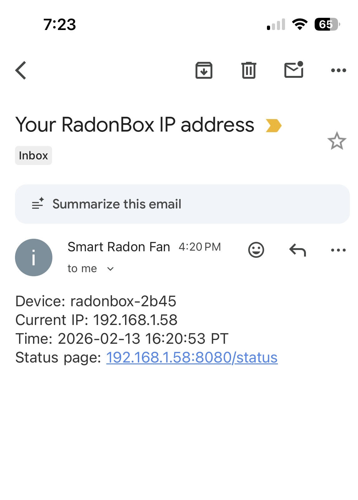
If the RadonBox address changes, due to WiFi network address changes, a similar email with the new RadonBox address will be received at the user’s email address.
Following the 192.168.1.58:8080/status link will take the user’s smartphone browser immediately to the RadonBox, with the following screen:
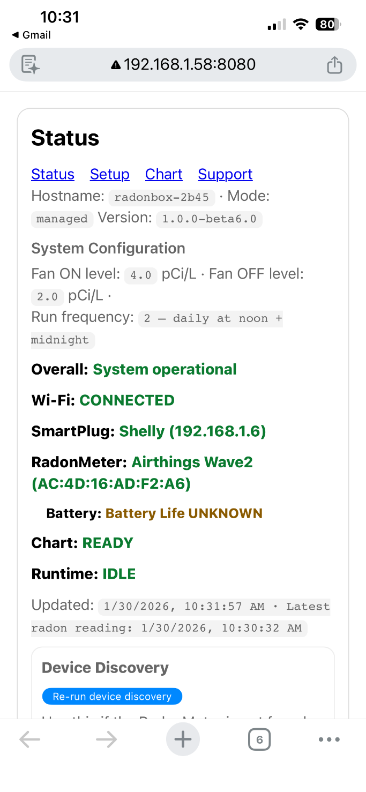
Select the Setup, Chart, and Support links to explore all the features of the Smart Radon Fan.
Once the RadonBox has been brought on to the home network and discovered the Shelly and Airthings devices, it will run continuously, regularly sampling the Airthings Radon Meter and turning the fan on or off, as needed.